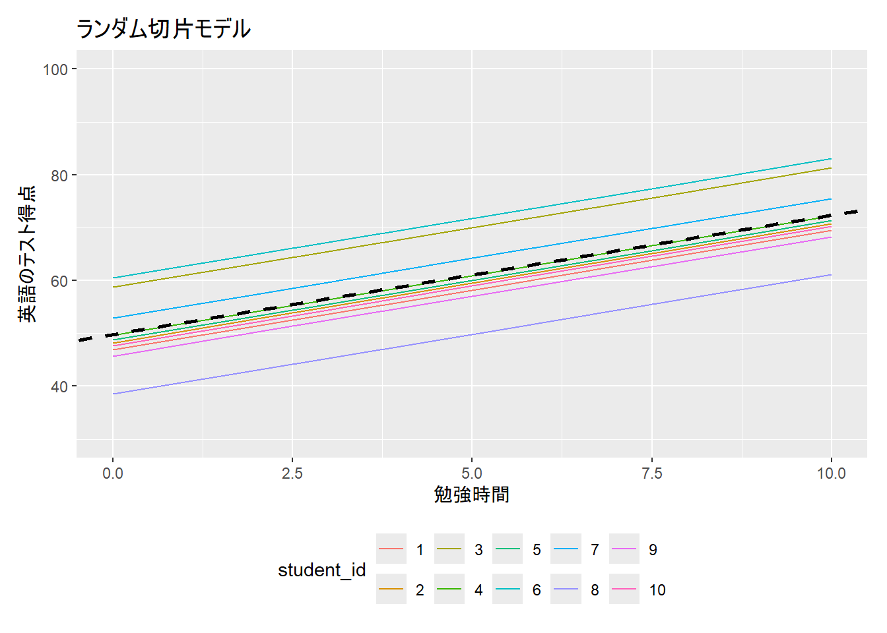
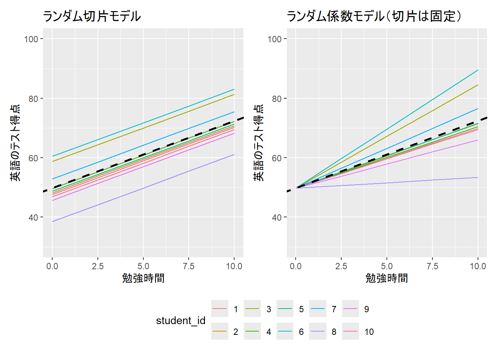
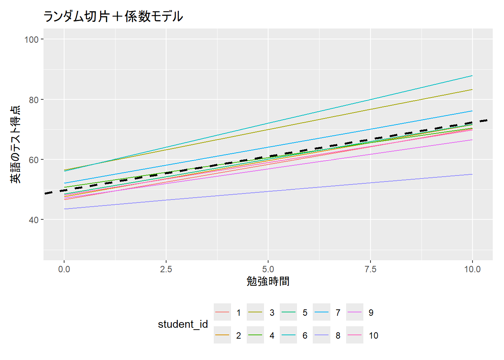
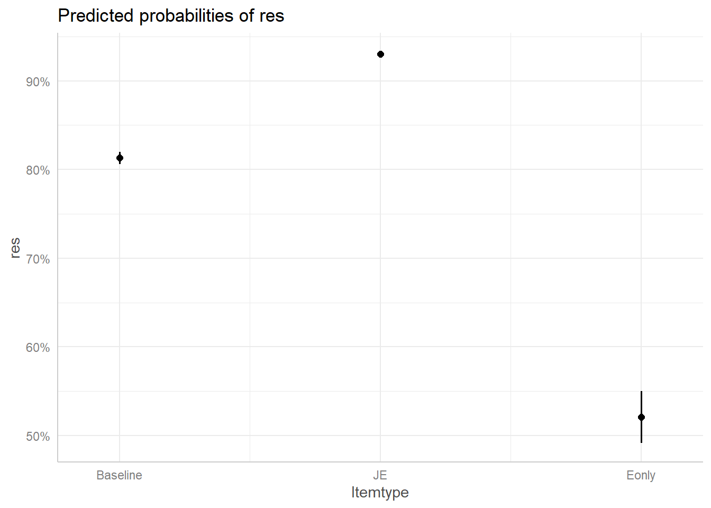
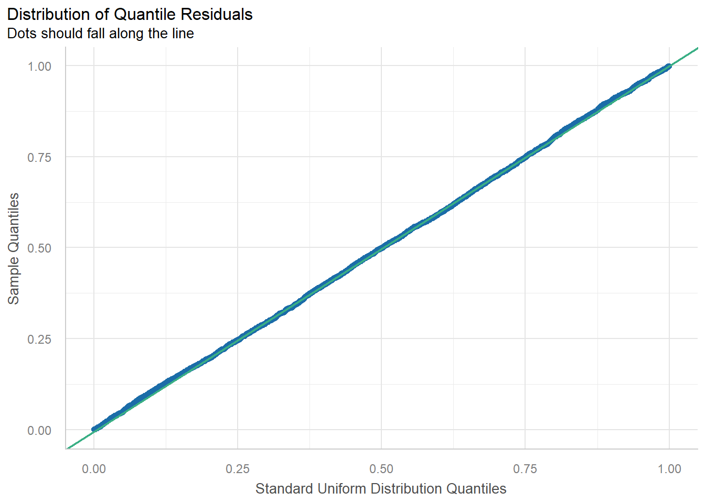
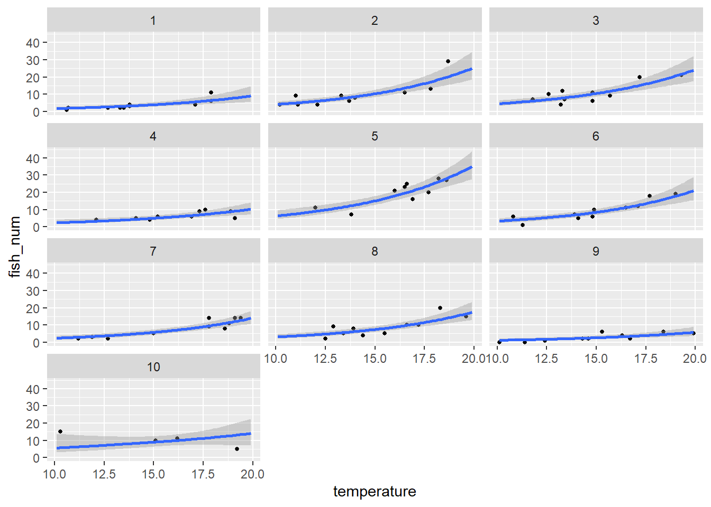

Week 12：階層モデル
事前の確認
この講義のRプロジェクトを開いていますか？
英数字で名前を付けた本日の講義のファイルを作成しましたか？
- .Rでも.Rmdでもどちらでも大丈夫です。
今日の目標
- 階層モデルについて理論的背景やその仮定について理解する
- 階層モデルをRで実装し、分析の結果を報告することができる
一般化線形モデルからの発展
一般線形モデル：従属変数が正規分布に従う（e.g., t 検定、分散分析、回帰分析）
- Week 4 - Week 9
一般化線形モデル：正規分布以外の分布を扱う
- Week 10
一般化線形混合効果モデル（Genealized Linewr Mixed Model: GLMM）：一般化線形モデルを拡張。実験計画などではコントロールできない要因（ランダム効果）をモデルに組み込む => 本日
マルチレベルモデル（multilevel model）、階層線形モデル（hierarchical linear model）、混合効果モデル（mixed-effects model）などとも呼ばれる
混合効果：これまでの講義で扱ってきた独立変数（固定効果）とランダム効果を1つのモデルで表す
得られたデータには、研究目的とは関係のないノイズが含まれる
例.
項目を提示する順番の影響
項目や参加者が持つ特性
基本的に最尤推定法を用いるモデルを指すが、推定法がマルコフ連鎖モンテカルロ法（MCMC）の場合は、階層ベイズモデルと呼ばれる。階層ベイズモデルは、最尤推定法によるGLMMに比べ、よりデータに合わせた柔軟なモデリングが可能である。
どのように高度な手法を使う場合でも、分析の前に平均や分散などの記述統計・図示をもとに、立てた仮説や予測と一致しているかなどの確認が必要です。また、分析に入れる変数も、理論や仮説などから妥当なものを原則入れるべきです。
ランダム効果とは
- データにばらつきをもたらす、人間が測定できない・測定しなかった（または原因不明の）個体差の効果
ランダム効果を設定するべきか否かの判断は、「同じ個体（参加者）や場所から何度もサンプリングしているか」
例
各参加者に対し、複数の問題を解かせる
4つの学校の複数の学生からデータを取得する
Note
「個体から複数のデータを取る」という実験操作を疑似反復という
- 「疑似」がつく理由：個体差を消すほどの反復にはなっていないため。個体差などを打ち消すような実験操作ができている場合「反復」とみなせる（個体差や場所差を打ち消すために反復を行う）。
ランダム切片モデル
切片の値が個体差（e.g., 参加者）によって異なることを仮定したモデル
- 例. 指導法Aと指導法Bの効果を比較検証したい（事後テストの得点を目的変数として分析）。この場合、テスト得点は指導法の効果による影響だけでなく、生徒の個人差によって異なると仮定
ランダム係数モデル
モデル内の独立変数の係数が個体差によって異なることを仮定したモデル
- 例. 指導法Aと指導法Bの効果を比較検証したい（事後テストの得点を目的変数として分析）。この場合、指導法の効果は生徒の個人差によって異なる仮定

ランダム切片 & 係数モデル

GLMMを行うときの留意点
推定方法
頻度統計の場合のマルチモデルの推定には最尤法が使われる（Maximum Likelihood）。目安として50人程度のサンプルサイズが最低限必要（変量効果の分散成分が過小推定される）。しかし、サンプルサイズがどうしても少なくなる場合もある。そこで、制限つき最尤法が開発され、ソフトウェアではこちらが採用されている場合が多い。サンプルサイズが十分に多い場合、最尤法の方が制限つき最尤法よりも推定精度がいい（標準誤差が小さい）。また制限つき最尤法では固定効果について尤度を計算しないため、情報量基準を用いたモデル比較を行うことができない。
最尤法、制限つき最尤法も従属変数の正規性と分散均一性の仮定がある。サンプルサイズが十分に大きい場合、切片や回帰係数の推定値は分布が歪んでいることによるバイアスを受けにくい。しかし、標準誤差は正しく推定されなくなるため、標準誤差を使って算出される有意性検定や信頼区間の推定にバイアスが発生することに注意が必要。
データセットの構造に注意
(「Week 11: Tidyverseパッケージによるデータの加工と可視化」を参照してください)
これまでに使用してきたデータセットが必ずしもGLMMの分析に合うものではない
各行には、一人の参加者の各項目が含まれているべきである
- この形式にしておけば、どのような分析にも対応できる（Tidy dataとも呼ばれる）
Tidy dataの例
subject itemID res
1 2 1 1
2 2 2 1
3 2 3 1
4 2 4 1
5 2 5 1計算の負荷が大きい
- これまでに紹介した分析とは異なり、結果が出力されるまでに時間がかかります。モデルの変数が多く、ランダム効果にも複数の変数を含む場合、数日かかることもあります。
ハンズオンセッション
データの読み込み
パッケージのインストール
lme4パッケージを使用します
library(lme4)- 処理にかかる時間を計測するため、
tictocパッケージを使います。
# install.packages("tictoc")
library(tictoc)- コンピュータのスペックはこんな感じです
$vendor_id
[1] "GenuineIntel"
$model_name
[1] "13th Gen Intel(R) Core(TM) i9-13900K"
$no_of_cores
[1] 32137 GB- Terai et al. (2024)のデータを使用します。
dat <- read.csv("sample_data/AJ.csv")dat$Itemtype <- factor(dat$Itemtype, levels = c("Baseline", "JE", "Eonly"))
contrasts(dat$Itemtype) <- contr.treatment(3)
contrasts(dat$Itemtype) 2 3
Baseline 0 0
JE 1 0
Eonly 0 1- 連続値の場合中心化します
#install.packages("tidyverse")
library(dplyr)
dat2 <- dat %>%
group_by(subject) %>%
mutate(across(c("pres.order", "Length"), ~scale(.x)[,1],.names = "z.{col}")) %>%
ungroup()切片のみ（実験項目、参加者）のモデル
従属変数：正答（1: 正解、2: 不正解）
独立変数：コロケーションの種類
tic()
res.1 <- glmer(
res ~ Itemtype +
(1|subject) + (1|itemID),
family = binomial(link = "logit"),
data = dat2,
control = glmerControl(optimizer = "bobyqa")
)
toc()0.8 sec elapsedsummary(res.1)Generalized linear mixed model fit by maximum likelihood (Laplace
Approximation) [glmerMod]
Family: binomial ( logit )
Formula: res ~ Itemtype + (1 | subject) + (1 | itemID)
Data: dat2
Control: glmerControl(optimizer = "bobyqa")
AIC BIC logLik -2*log(L) df.resid
3601.5 3632.6 -1795.7 3591.5 3707
Scaled residuals:
Min 1Q Median 3Q Max
-5.1739 -0.4177 0.3423 0.5275 2.9380
Random effects:
Groups Name Variance Std.Dev.
itemID (Intercept) 1.0063 1.0032
subject (Intercept) 0.1647 0.4059
Number of obs: 3712, groups: itemID, 116; subject, 32
Fixed effects:
Estimate Std. Error z value Pr(>|z|)
(Intercept) 1.4468 0.1517 9.536 < 2e-16 ***
Itemtype2 1.0938 0.2879 3.799 0.000145 ***
Itemtype3 -1.3669 0.2618 -5.222 1.77e-07 ***
---
Signif. codes: 0 '***' 0.001 '**' 0.01 '*' 0.05 '.' 0.1 ' ' 1
Correlation of Fixed Effects:
(Intr) Itmty2
Itemtype2 -0.397
Itemtype3 -0.450 0.230切片と係数のモデル
モデルが上手く収束しなかった
tic()
res.2 <- glmer(
res ~ Itemtype +
(1 + pres.order|subject) + (1|itemID),
family = binomial(link = "logit"),
data = dat2,
control = glmerControl(optimizer = "bobyqa")
)
toc()- 出力結果：
警告: Model failed to converge with max|grad| = 0.00228081 (tol = 0.002, component 1) 警告: Model is nearly unidentifiable: very large eigenvalue - Rescale variables?
- 中心化した変数だとうまくいった
tic()
res.3 <- glmer(
res ~ Itemtype +
(1 + z.pres.order|subject) + (1|itemID),
family = binomial(link = "logit"),
data = dat2,
control = glmerControl(optimizer = "bobyqa") #スムーズに推定を行うためにこれを設定します
)
toc()1.58 sec elapsedsummary(res.3)Generalized linear mixed model fit by maximum likelihood (Laplace
Approximation) [glmerMod]
Family: binomial ( logit )
Formula: res ~ Itemtype + (1 + z.pres.order | subject) + (1 | itemID)
Data: dat2
Control: glmerControl(optimizer = "bobyqa")
AIC BIC logLik -2*log(L) df.resid
3595.6 3639.1 -1790.8 3581.6 3705
Scaled residuals:
Min 1Q Median 3Q Max
-5.2004 -0.4170 0.3360 0.5232 3.6998
Random effects:
Groups Name Variance Std.Dev. Corr
itemID (Intercept) 1.02492 1.0124
subject (Intercept) 0.16874 0.4108
z.pres.order 0.06019 0.2453 -0.17
Number of obs: 3712, groups: itemID, 116; subject, 32
Fixed effects:
Estimate Std. Error z value Pr(>|z|)
(Intercept) 1.4707 0.1535 9.580 < 2e-16 ***
Itemtype2 1.1154 0.2900 3.846 0.00012 ***
Itemtype3 -1.3865 0.2642 -5.247 1.54e-07 ***
---
Signif. codes: 0 '***' 0.001 '**' 0.01 '*' 0.05 '.' 0.1 ' ' 1
Correlation of Fixed Effects:
(Intr) Itmty2
Itemtype2 -0.395
Itemtype3 -0.449 0.230- 95% 信頼区間の算出（CI）
se <- sqrt(diag(vcov(res.3)))
# table of estimates with 95% CI
tab <- cbind(
Est = fixef(res.3),
LL = fixef(res.3) - 1.96 * se,
UL = fixef(res.3) + 1.96 * se
)
tab Est LL UL
(Intercept) 1.470673 1.1697749 1.7715711
Itemtype2 1.115433 0.5469471 1.6839180
Itemtype3 -1.386501 -1.9043996 -0.8686026confint()でも算出可能- こちらは推定法の関係で時間がかかる
tic()
confint(res.3, method = "Wald") 2.5 % 97.5 %
.sig01 NA NA
.sig02 NA NA
.sig03 NA NA
.sig04 NA NA
(Intercept) 1.1697804 1.7715656
Itemtype2 0.5469576 1.6839075
Itemtype3 -1.9043900 -0.8686121toc()0 sec elapsed- オッズ比
exp(tab) Est LL UL
(Intercept) 4.3521632 3.221267 5.8800845
Itemtype2 3.0508876 1.727970 5.3866193
Itemtype3 0.2499483 0.148912 0.4195374モデル比較
- 尤度比検定の結果、係数を考慮したモデルの方がよりAICが有意に低かった
anova(res.1, res.3)Data: dat2
Models:
res.1: res ~ Itemtype + (1 | subject) + (1 | itemID)
res.3: res ~ Itemtype + (1 + z.pres.order | subject) + (1 | itemID)
npar AIC BIC logLik -2*log(L) Chisq Df Pr(>Chisq)
res.1 5 3601.5 3632.6 -1795.7 3591.5
res.3 7 3595.6 3639.1 -1790.8 3581.6 9.9044 2 0.007068 **
---
Signif. codes: 0 '***' 0.001 '**' 0.01 '*' 0.05 '.' 0.1 ' ' 1- 図示
#install.packages("ggeffects")
library(ggeffects)
eff <- ggpredict(res.3, terms = "Itemtype")
plot(eff)
モデル診断
performanceパッケージが便利VIF（多重共線性についての指標）
- 今回は1変数しかないので確認の必要はない
#install.packages("performance")
library(performance)
check_collinearity(モデルの結果を格納した変数名)外れ値
p ≥ .05: 残差はモデル期待通り（≒一様分布）
p < .05: 残差がモデル期待とズレている（≒モデルのミスフィット）
library(performance)
check_residuals(res.3)OK: Simulated residuals appear as uniformly distributed (p = 0.149).plot(check_residuals(res.3))For confidence bands, please install `qqplotr`.
Note
ランダム効果を組み込んだ回帰分析を行う主な理由の一つに、縮約（shrinkage）という効果があります。縮約とは、各グループの極端な推定値が、全体の平均値（プーリングされた平均）に引き寄せられる現象を指します。この効果により、サンプル数が少ないグループや外れ値の影響が軽減され、より頑健で一般化可能な推定が可能になります。しかし、極端な推定値が実際に意味のあるものであった場合、縮約によってその効果が過小評価されてしまうという問題があります。たとえば、複数の種類の薬の効果を検証したい場合に、薬の種類をランダム効果に含めてモデルを構築すると、ある薬が他と明らかに異なる効果を示していたとしても、縮約によってその差が「なかったこと」になってしまう可能性があります。このようなケースでは、薬の種類ごとの効果を明確に比較したいという研究目的があるため、薬の種類をランダム効果としてではなく独立変数（固定効果）としてモデルに含める必要があります。つまり、何をランダム効果として設定するのかを研究課題・仮説の段階で決めておく必要があります。
- 以下の図は、気温と参加者の交互作用のモデルです。10番の参加者のデータのみ、右肩下がりとなっています。

- 以下の図は気温と参加者の交互作用ではなく、独立変数に気温、ランダム効果に参加者を含めたモデルです。10番の参加者が他の参加者と同じ右肩上がりの傾向に変わっていることが分かります。

次週までの課題
課題内容
小テストに向けて今回の内容を復習する。必ず手でコードを入力してRを実行する。
今回の講義のハンズオンセッションの内容を再度自分のRプログラム上で実行する。分析の最後に、結果の報告を行うこと。
提出方法
- TACT上で提出。
- 締め切りは今週の木曜日まで
参考文献
📚久保（2012）『データ解析のための統計モデリング入門』岩波書店
📚清水（2014）『個人と集団のマルチレベル分析』ナカニシヤ出版
📚竹内・水本（編著）（2023）『外国語教育研究ハンドブック【増補版】―研究手法のより良い理解のために』松柏社
📚馬場（2019）『RとStanではじめる ベイズ統計モデリングによるデータ分析入門』講談社
📄村山. (2018). 刺激の効果を侮るなかれ―ランダム刺激効果を含んだ線形混合モデルの重要性と落とし穴―. 基礎心理学研究, 36(2), 236-242.
📄山口. (2018). 【心理学系】混合効果モデルの利用: 刺激の変量効果への対処. バイオフィードバック研究, 45(2), 93-98.
💻Mixed Effects Logistic Regression | R Data Analysis Examples
💻Crossed vs nested random effects: how do they differ and how are they specified correctly in lme4?